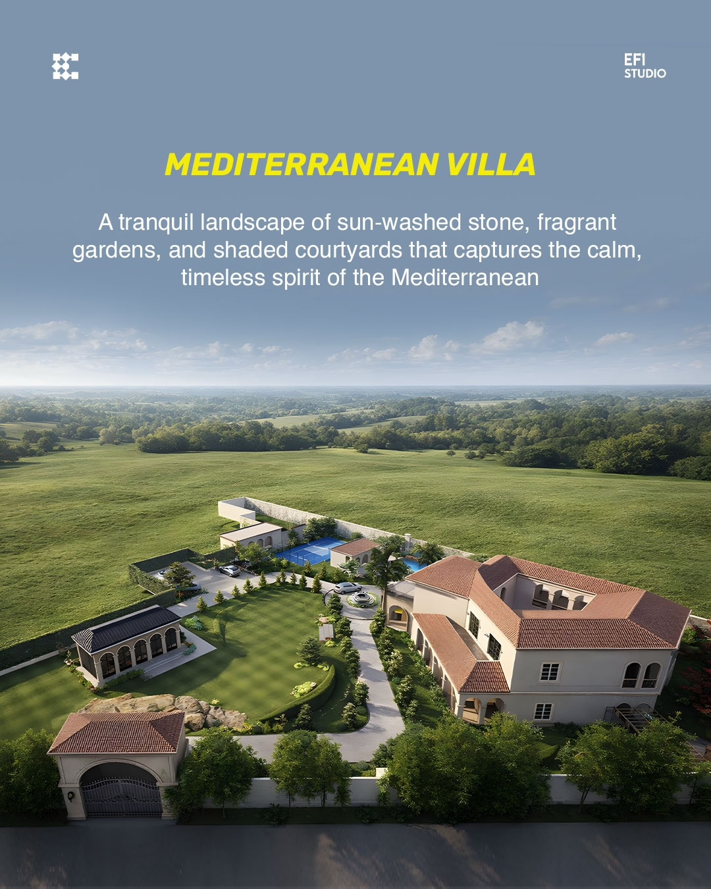
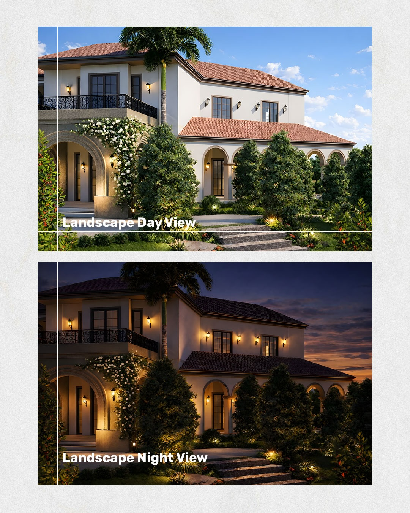
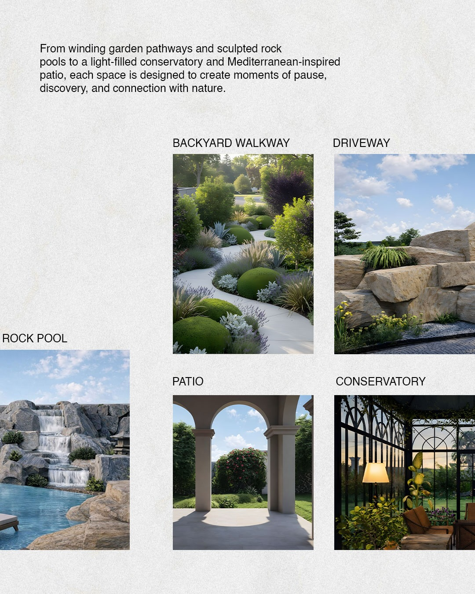

Mediterranean Villa

Inspired by Mediterranean living, this villa explores open spaces, natural materials and connections between the home and its landscape.
Design visualizations from EFI’s Instagram. Project location and completion status are unverified.

